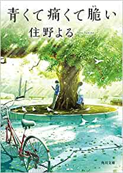

人に不用意に近づきすぎないことを信条にしていた大学一年の春、僕は秋好寿乃に出会った。周囲から浮いていて、けれど誰よりもまっすぐだった彼女。その理想と情熱にふれて、僕たちは二人で秘密結社「モアイ」をつくった。――それから三年、あのとき将来の夢を語り合った秋好はもういない。そして、僕の心には彼女がついた嘘がトゲのように刺さっていた。傷つくことの痛みと青春の残酷さを描ききった住野よるの代表作。

青くて痛くて脆い